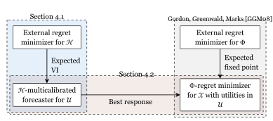

The black-box reduction from \(\Phi\)-regret to online learning due to Gordon, Greenwald and Marks [GGM08][GGM08] G. J. Gordon, A. Greenwald and C. Marks. (2008). No-regret learning in convex games. International Conference on Machine Learning. centers around the algorithmic primitive of fixed points. This chapter introduces a different route to the same destination that passes through forecasting [FP26][FP26] G. Farina and J. C. Perdomo. (2026). An Efficient Black-Box Reduction from Online Learning to Multicalibration, and a New Route to $Phi$-Regret Minimization. arXiv preprint arXiv:2604.19592..
At a high level, the moral of this section is the following, also depicted in Figure 1.
As we will show towards the end of the chapter, this forecasting-based reduction comes with algorithmic benefits that forego the need for complicated semiseparation (Ref Chapter 3). We note however that it is not known whether a forecasting-based approach can yield fast offline algorithms for \(\Phi\)-equilibrium computation (cf. Ref Chapter 2).

4.1 A Gordon-Greenwald-Marks result for multicalibration
We start with online multicalibration. In every round \(t\), Nature reveals a context \(\mathbf{c}^{\left(t\right)} \in \mathcal{C}\). The learner outputs a distribution \(D^{\left(t\right)}\) over forecasts \(\mathbf{p}^{\left(t\right)} \in \mathcal{U} \subseteq \mathbb{R}^d\), and Nature then reveals the true utility vector \(\mathbf{u}^{\left(t\right)} \in \mathcal{U}\). Given test \(h : \mathcal{C} \times \mathcal{U} \to \mathbb{R}^d\), the calibration error against \(h\) is
The forecasts are \(\mathcal{H}\)-multicalibrated if \(\mathrm{MC\text{-}Err}^{\left(T\right)} \left(h\right) = o\left(T\right)\) for every \(h \in \mathcal{H}\).
As we show in Theorem 4.2, multicalibration admits a black-box reduction to online learning in the style of Gordon, Greenwald and Marks [GGM08][GGM08] G. J. Gordon, A. Greenwald and C. Marks. (2008). No-regret learning in convex games. International Conference on Machine Learning.. In the case of multicalibration, the nonlinear primitive is not fixed points, but rather expected variational inequalities, as defined next.11Expected variational inequalities have appeared in the literature under different names finish
Definition 4.1 (Expected variational inequality). Let \(S : \mathcal{U} \to \mathbb{R}^d\) be an operator and let \(\epsilon > 0\). An \(\epsilon\)-solution to the expected variational inequality induced by \(S\) is a distribution \(D\) over \(\mathcal{U}\) such that
One way to parse (2) is as a randomized self-consistency condition. The distribution \(D\) may place mass on several forecasts; nevertheless, after averaging over that randomness, no possible utility vector \(\mathbf{u} \in \mathcal{U}\) has positive correlation with the residual direction \(S\left(\mathbf{p}\right)\) by more than \(\epsilon\). This is exactly what will make the regret analysis telescope. Efficient algorithms for EVIs are known for general compact convex sets under mild oracle access assumptions; for our purposes, the important point is that EVIs are a standalone optimization primitive, just as fixed points were in the Gordon-Greenwald-Marks theorem from Chapter 1.
Now suppose that we have an external-regret minimizer \(R_\mathcal{H}\) whose decision set is the class of tests \(\mathcal{H}\). In each round, it chooses a test \(h^{\left(t\right)} \in \mathcal{H}\); after the utility vector is revealed, it receives the linear utility
The reduction is as follows.
NextForecast(\(\mathbf{c}^{\left(t\right)}\)):NextStrategy\(\left(\right)\)ObserveUtility(\(\mathbf{u}^{\left(t\right)}\)):Theorem 4.2. Let \(\mathrm{Reg}_\mathcal{H}^{\left(T\right)}\left(h\right)\) be the external regret of \(R_\mathcal{H}\) with respect to the sequence of utilities \(g^{\left(1\right)}, \dots, g^{\left(T\right)}\), and let \(\mathrm{EVI}^{\left(T\right)} \coloneqq \sum_{t=1}^T \epsilon^{\left(t\right)}\). Then the forecasts produced by the algorithm above satisfy
Proof. The EVI condition is invoked at the realized utility vector \(\mathbf{u}^{\left(t\right)}\), so
Therefore, for any comparator test \(h \in \mathcal{H}\),
Thus, sublinear regret over \(\mathcal{H}\), together with \(\sum^{\left(T\right)} \epsilon^{\left(t\right)} = o\left(T\right)\), gives sublinear multicalibration error.
Necessity of EVIs. In a precise sense, EVIs are also necessary. Suppose we already had an efficient \(\mathcal{H}\)-multicalibrated forecaster. Fix a context \(\mathbf{c} \in \mathcal{C}\) and a test \(h \in \mathcal{H}\), and consider the EVI operator \(S\left(\mathbf{p}\right) = h\left(\mathbf{c}, \mathbf{p}\right)\). To solve this EVI, run the forecaster for \(T\) rounds with the same context \(\mathbf{c}^{\left(t\right)} = \mathbf{c}\). After it outputs \(D^{\left(t\right)}\), choose Nature’s response as
For any fixed \(\mathbf{u}^\star \in \mathcal{U}\), the choice in (7) gives
Averaging the distributions \(D^{\left(1\right)}, \dots, D^{\left(T\right)}\) uniformly therefore produces a distribution \(D\) with
As \(T\) grows, multicalibration drives the right-hand side to \(0\). So an online multicalibrated forecaster gives a black-box EVI solver.
4.2 From Multicalibration to Phi-regret minimization
We now turn the arrow around and use forecasting to make decisions. Let \(\mathcal{X} \subseteq \mathbb{R}^d\) be a compact convex action set, and let \(\mathcal{U} \subseteq \mathbb{R}^d\) be a compact convex set of possible utility vectors. A deviation class is a family \(\Phi \subseteq \left\{\phi : \mathcal{X} \to \mathcal{X}\right\}\). If the learner outputs distributions \(\mu^{\left(t\right)}\) over \(\mathcal{X}\), its \(\Phi\)-regret against a deviation \(\phi \in \Phi\) is
The reduction asks the forecaster to predict the next utility vector. Given a forecast \(\mathbf{p} \in \mathcal{U}\), define the deterministic best response
with ties broken by a fixed rule. If the forecaster outputs a distribution \(D^{\left(t\right)}\) over forecasts \(\mathbf{p}^{\left(t\right)}\), the decision maker plays the pushforward distribution \(\mu^{\left(t\right)}\) induced by \(\mathbf{x}^{\left(t\right)} = \sigma\left(\mathbf{p}^{\left(t\right)}\right)\).
What tests should the forecaster be calibrated against? For each deviation \(\phi \in \Phi\), define
This definition is the whole reduction. The test \(h_\phi\) measures the direction in utility space in which the deviation \(\phi\) would improve over the best response to the forecast.
NextStrategy():ObserveUtility(\(\mathbf{u}^{\left(t\right)}\)):Theorem 4.3. If the forecaster in the algorithm above has multicalibration error \(\mathrm{MC\text{-}Err}^{\left(T\right)}\) with respect to \(\mathcal{H}_\Phi\), then the decision maker has
In particular, sublinear \(\mathcal{H}_\Phi\)-multicalibration implies sublinear \(\Phi\)-regret.
Proof. Fix any \(\phi \in \Phi\). Since \(\mu^{\left(t\right)}\) is the pushforward of \(D^{\left(t\right)}\) under \(\mathbf{p} \mapsto \sigma\left(\mathbf{p}\right)\),
The first term is exactly \(\mathrm{MC\text{-}Err}^{\left(T\right)}\left(h_\phi\right)\). The second term is nonpositive, because
by the definition of \(\sigma\left(\mathbf{p}\right)\) as a maximizer over \(\mathcal{X}\).
The theorem is useful because the complexity of the required calibration class scales with the complexity of the deviation class. If \(\Phi\) contains only constant deviations, then \(\mathcal{H}_\Phi\) is a class of constant best-response gaps and we recover external regret. If \(\Phi\) grows toward all maps \(\mathcal{X} \to \mathcal{X}\), then \(\mathcal{H}_\Phi\) becomes a strong calibration class and the result approaches the classical connection between calibration and swap regret.
The contextual version is identical. If contexts \(\mathbf{c}^{\left(t\right)}\) are observed before play and deviations have the form \(\phi : \mathcal{C} \times \mathcal{X} \to \mathcal{X}\), then we define
Multicalibration with respect to these tests gives contextual \(\Phi\)-regret.
4.2.1 Putting the two reductions together
Combining Theorem 4.2 and Theorem 4.3 gives the promised route from external regret to \(\Phi\)-regret. Set \(\mathcal{H} = \mathcal{H}_\Phi\). Run the multicalibration algorithm as the forecaster inside the best-response algorithm. Then, for every \(\phi \in \Phi\),
Thus the burden of \(\Phi\)-regret minimization shifts to two primitives:
- no-regret learning over the induced test class \(\mathcal{H}_\Phi\); and
- solving EVIs over the forecast domain \(\mathcal{U}\).
The key distinction from the Gordon-Greenwald-Marks path is that we do not need to optimize over valid deviations directly. We only need a regret minimizer over tests that contain the maps \(h_\phi\). This extra flexibility is what makes the approach especially clean for large structured deviation classes.
4.2.2 Linear deviations
As an illustration, consider linear deviations \(\phi\left(\mathbf{x}\right) = \mathbf{M} \mathbf{x}\) over a convex compact set \(\mathcal{X} \subseteq \mathbb{R}^d\). The classical GGM approach asks us to understand the geometry of all matrices \(\mathbf{M}\) satisfying \(\mathbf{M} \mathcal{X} \subseteq \mathcal{X}\), and then compute fixed points of the matrices selected by the regret minimizer. That geometry can be difficult.
The multicalibration route permits a relaxation. From (12),
If every valid linear endomorphism has spectral norm at most \(S\), then each test above lies in a Frobenius ball of radius on the order of \(\sqrt{d}\left(S + 1\right)\). Instead of learning over valid endomorphisms, we can learn over the larger class
where \(\rho\) is chosen large enough to contain all tests \(h_\phi\). This larger class is easy: external regret over a Euclidean ball is handled by projected gradient descent. Indeed, the utility sent to the matrix learner at time \(t\) is linear:
Consequently, if \(\left\lVert \mathbf{x}\right\rVert_2 \le B\) for \(\mathbf{x} \in \mathcal{X}\) and \(\left\lVert \mathbf{u}\right\rVert_2 \le L\) for \(\mathbf{u} \in \mathcal{U}\), the standard projected-gradient bound gives \(O\left(B L S \sqrt{d T}\right)\) linear-swap regret, up to constants. This improves the dimension dependence of the recent semi-separation-based route of Daskalakis, Farina, Fishelson, Pipis and Schneider [Das+25][Das+25] C. Daskalakis, G. Farina, M. Fishelson, C. Pipis and J. Schneider. (2025). Efficient Learning and Computation of Linear Correlated Equilibrium in General Convex Games. Symposium on Theory of Computing (STOC)., while avoiding semi-separation altogether.
4.2.3 RKHS deviations
The same idea extends beyond finite-dimensional linear classes. Suppose that the deviation functions \(\phi : \mathcal{C} \times \mathcal{X} \to \mathcal{X}\) lie in a vector-valued reproducing kernel Hilbert space with matrix-valued kernel
For the contextual reduction, the relevant tests are
These tests also lie in an RKHS. Indeed, the first term is represented by composing the deviation kernel with the best-response map, while the second term is represented by the linear kernel on \(\sigma\left(\mathbf{p}\right)\). The resulting kernel is
So, if we have an online learner over the RKHS ball associated with \(\Gamma'\), Theorem 4.2 supplies a multicalibrated forecaster, and Theorem 4.3 turns it into a no-\(\Phi\)-regret algorithm. This recovers low-degree polynomial deviations as a special case and also covers infinite-dimensional kernels, such as Gaussian kernels, where the fixed-point route does not have an obvious finite-dimensional endomorphism geometry to exploit.
The moral is that forecasting separates the two hard-looking parts of \(\Phi\)-regret. Best response converts forecasts to actions; multicalibration certifies that no deviation can systematically exploit the forecast errors; and EVIs provide the self-consistency condition that makes the forecaster black-box reducible to ordinary external regret.
Bibliography for this chapter
[GGM08]G. J. Gordon, A. Greenwald and C. Marks. (2008). No-regret learning in convex games. International Conference on Machine Learning.
[FP26]G. Farina and J. C. Perdomo. (2026). An Efficient Black-Box Reduction from Online Learning to Multicalibration, and a New Route to $Phi$-Regret Minimization. arXiv preprint arXiv:2604.19592.
[Das+25]C. Daskalakis, G. Farina, M. Fishelson, C. Pipis and J. Schneider. (2025). Efficient Learning and Computation of Linear Correlated Equilibrium in General Convex Games. Symposium on Theory of Computing (STOC).
Footnotes
1Expected variational inequalities have appeared in the literature under different names finish